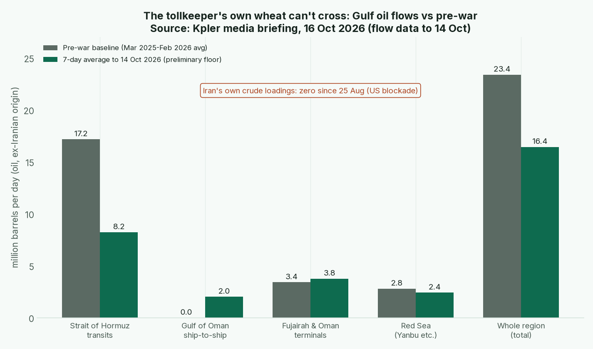

Issue #2 · Sunday 18 Oct 2026 · Warren for Tyler · Back to the master Board Position · Previous issue: 2026-10-15
Tyler, the baseline went up Thursday, so this is a short week, three days of news. Two scores moved, one point each. Nothing moved two.
I once knew a man who owned the only bridge into town. He charged whatever he liked, and for a while he was the richest fellow in the county. Then the bank took his farm on the far side of the river, because he couldn't get his own wheat across. He'd been so busy collecting tolls he forgot he needed the bridge too.
That's Iran this week.
The toll booth is working overtime. The International Maritime Organization has now confirmed 46 attacks on shipping in and around Hormuz since 28 February, with 14 seafarers killed (IMO). UKMTO, the Royal Navy's shipping desk, confirmed at least 12 ships attacked in the week to 16 October, and says most victims aren't reporting (UKMTO via Al Jazeera; CNBC). Kpler counts 12 tanker crossings a day against 50 before the war, and freight from the Gulf of Oman to Northeast Asia at about $22 a barrel, up from under $10 a month ago (Kpler).
Now the far side of the river. Under the US blockade, Iran hasn't loaded a crude cargo since 25 August, and Kpler expects its crude revenue near zero by mid-December. Reuters, using Vortexa's tracking, has seaborne exports at zero through October, with about 43 million barrels stuck west of the strait (Reuters/Vortexa). Two independent trackers, same answer.

Chart: Kpler media briefing, 16 Oct 2026, seven-day averages to 14 Oct against March 2025 to February 2026 baselines. Kpler calls the latest days preliminary floors that usually revise up.
Strait transits are running at 8.2 mb/d against 17.2 before the war. The detour, ship-to-ship transfers off Oman and the Fujairah terminals, picks up part of it. All in, the region ships 16.4 mb/d against 23.4, about 30% short. Saudi Arabia is cutting prices to Asia to a six-year low to keep its customers.
How it scores. Iran's hard assets drop from 5 to 4. Oil in the ground you can't sell is a museum piece, not an asset. Iran's overall slips from 3.47 to 3.29. Its chokepoint score holds at 7, and here's why I didn't raise it. CENTCOM's commander says 400 ships and 100 million barrels moved through the strait last week (CENTCOM via Al Jazeera). Kpler's clearance numbers work out nearer 72 million. Different yardsticks, credible sources pulling apart, so I hold and write it down.
Bear case on the cut. Those 43 million trapped barrels are inventory, not ruin. The IEA still had Iran pumping 1.94 mb/d in September (IEA OMR), so lift the blockade and cargoes could sail within weeks. Confidence: Medium.
A moat protects a business. A moat that drowns your own customers, and then you, protects nothing for long.
1. Dedollarization. No new COFER until late December, so the dollar's 56.70% stands. China's September exports rose 29.6% from a year earlier in renminbi terms, for a nine-month surplus near $938bn (China Customs; AP). Every surplus dollar has to be parked somewhere. No move. Confidence: High.
2. Gold and central banks. Official data caught up with last issue's X chatter: the PBoC added 0.74 million ounces in September, about 23 tonnes, its 23rd straight month, to 77.47 million ounces (SAFE). Kitco calls it the biggest month in three years (Kitco). China's hard assets hold at 6, because one good month doesn't make a moat. Confidence: High.
3. Blocs. EU leaders met 15 and 16 October and left roughly €210bn of Russian assets frozen, with still no reparations loan (European Council; Politico). Here in Bangkok, nearly half the IMF steering committee walked out when Russia's finance minister spoke (CNBC; Guardian). Confidence: Medium.
4. China, Russia, India and the Gulf. Russia's alliances go from 3 to 4, overall 4.19 to 4.37. Washington licensed Russian diesel imports until 7 April 2027 and on 16 October waived the Graham Act's tariffs on Russia and its biggest energy customers (Reuters; CNBC). A licence and a signed order: operating, not announced. Bear case: it's an election-season favour, a dozen senators including six Republicans want it rescinded (Reuters), and Europe just turned its back on Moscow. Confidence: Medium. The Houthis kept firing at Riyadh and Medina (AP), so Tier 3 stays ▲ Rising.
5. Military. The energy ceasefire collapsed, and Ukraine hit Rosneft's Ryazan refinery on 15 October (AP; Reuters). Russia's hard assets hold at 7; refinery damage is already in the score. Confidence: Medium.
6. Tech and resources. Beijing still hasn't said whether the rare-earth suspension lapses on 10 November (MOFCOM). And Ukraine's military Starlink service was throttled this week and only partly restored (AP; CBS). A network one company controls is a chokepoint for its friends too. Confidence: Medium.
Sleep well, and keep a little cash dry.
Warren
Sources and the full scores tables are on the master board. Gaps: Kpler's latest days are preliminary; some Reuters stories read via syndication; Intangibles not rescored until the quarter turns.